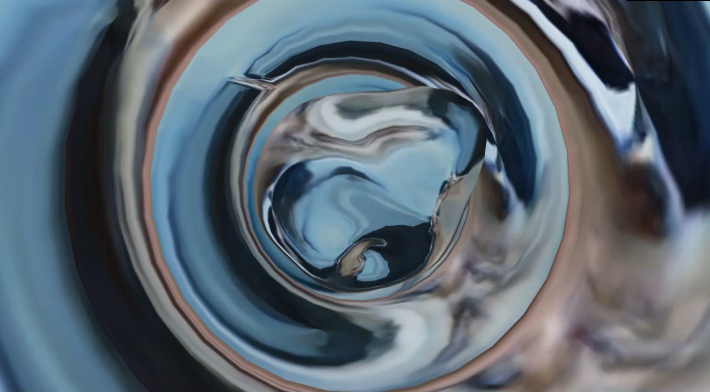

<!DOCTYPE html>
<html lang="ja" dir="ltr">
  <head>
    <meta charset="utf-8">
    <title></title>
    <link rel="stylesheet" href="../css/WorksStyle.css">
    <script type="text/javascript" src=../js/jquery.min.js></script>
    <script type="text/javascript" src=../js/ProfileScene.js></script>
  </head>

  <body>

    <header>
      <a id="Name" href="./mainScene.html">KeitoTakaishi</a>
      <a id="About" href="./profileScene.html">About</a>
    </header>

    <div class="TopImage">
      
    </div>

    <div class="Title">
      <h2></h2>
      <h5>Overview</h5>
    </div>

    <div class="Expression">
      <p>
        GanとGenerativeArtを組み合わせた作品。<br>
        Gan(敵対的生成ネットワーク)のモデルのうちGenerator部のみを使用し画像を生成。<br>
        生成した画像はリアルタイムでSpoutを使用することでTouchDesignerに送信している。<br>
        また、TouchDesignerに送信された画像はShader内部での参照するTexture,<br>
        マテリアルの環境マップなどに使用している。<br>

        <br>
        下の映像ではPythonアプリケーションからTouchDesignerへの1方向通信だけはなく、<br>
        TouchDesignerで音声を解析し、得た音量をPythonアプリケーションに送っている。<br>
        Ganの潜在空間内でのベクトルの移動量をその音量に比例させて、生成画像の補間を<br>
        オーディオリアクティブにしている。
      </p>
    </div>

    <div class="Movie">
      <div class="noMarginMovie">
          <iframe width="720" height="405" src="https://www.youtube.com/embed/w9NHMLufKnY" frameborder="0" allow="accelerometer; autoplay; encrypted-media; gyroscope; picture-in-picture" allowfullscreen></iframe>
      </div>
    </div>

    <div class="Expression">
      <p>
        Ganによって生成されたイメージをVertexTextureFetchに利用している。<br>
        また学習データを3チャンネルのカラー画像を使用。
      </p>
    </div>
    <div class="Movie">
      <div class="noMarginMovie">
        <iframe width="720" height="405" src="https://www.youtube.com/embed/Iga1umMvm1o" frameborder="0" allow="accelerometer; autoplay; encrypted-media; gyroscope; picture-in-picture" allowfullscreen></iframe>
      </div>
    </div>

    <div class="Expression">
      <p>
        モデルをGanからDCGanに変更した作品。<br>
        生成された画像は環境マップとして使用。
      </p>
    </div>
    <div class="Movie">
      <div class="noMarginMovie">
        <iframe width="720" height="405" src="https://www.youtube.com/embed/N4rqKa2TqaU" frameborder="0" allow="accelerometer; autoplay; encrypted-media; gyroscope; picture-in-picture" allowfullscreen></iframe>
      </div>
    </div>


    <div class="Tools">
      <h5>Tools</h5>
      <p>Keras&TouchDesigner</p>
    </div>

  </body>
</html>
